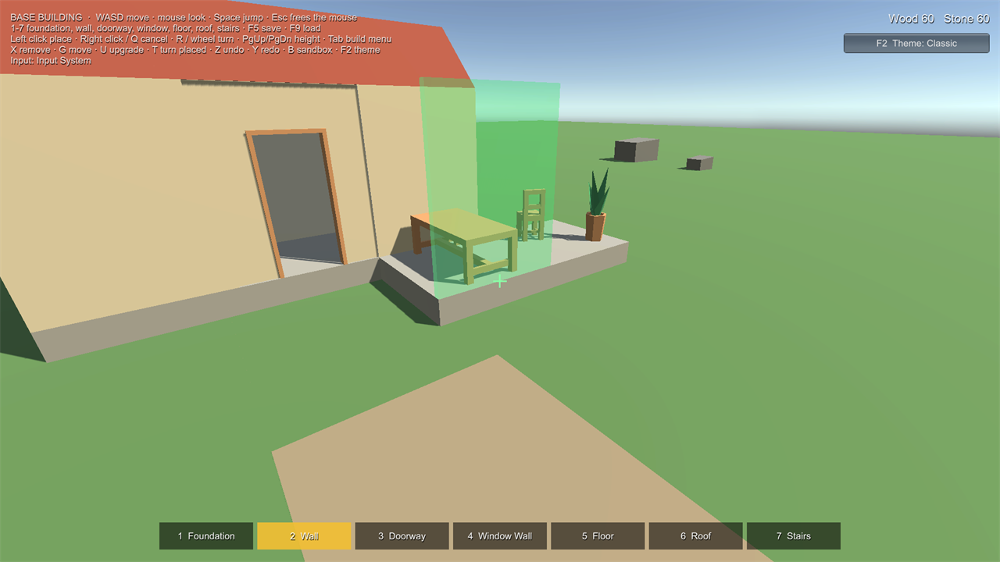

Quick Start
Goal: a model of your own, placed by a player, in about ten minutes. No code.
1. Try the sample (2 minutes) #
- Tools > All In One Runtime Building Kit > Open. The kit window opens on Home.
- Click Open Sample Scene, then press Play. Click the Game view to capture the mouse.
- Walk with WASD, look with the mouse. A green see-through foundation follows your aim.
- Left click to place it. Press 2 for the wall and aim at the foundation's top edge: the wall snaps onto it. R (or the mouse wheel) turns it. Left click to place.
- Aim a foundation into the grey rock: the preview turns red and the text says Overlaps Restricted_Rock. Aim at the ramp: Slope 35° (max 30°).
- Building costs Wood and Stone (top right). Try X (remove), G (move), U (upgrade the wall to stone), Z / Y (undo / redo) and B (sandbox: free building). Press Esc to release the mouse, then stop Play.

2. Your own model (5 minutes) #
- In the kit window, open Make Buildable.
- Drag your model (FBX, OBJ...) or prefab from the Project window into Model.
- Check Measured: the size in metres. If it is 100 times too big or small, fix the model's import Scale Factor.
- Check the Preset (the suggested one is marked): Foundation, Wall, Floor, Furniture or Wall Mounted.
- Name it, then click Create Piece. It is saved in your data folder; your model is not changed.
3. Test it (2 minutes) #
- Click Test in Play Mode. If asked to save the current scene, choose what suits you.
- A test scene opens with ground, a ramp, a crate and the sample player, and your piece is selected. Place it, and place a second one so it snaps to the first.
4. Check your pieces #
Open Pieces: every build piece in the project, with problems (no model, duplicate IDs, sockets without a type...) and a Fix button for each.
Next #
- Use the pieces in your own scene: add a Build World to the scene and a Builder to your player (see Placement and Sockets).
- Adjust sockets and the footprint with Edit in Scene (Pieces tab, or the piece's Inspector).